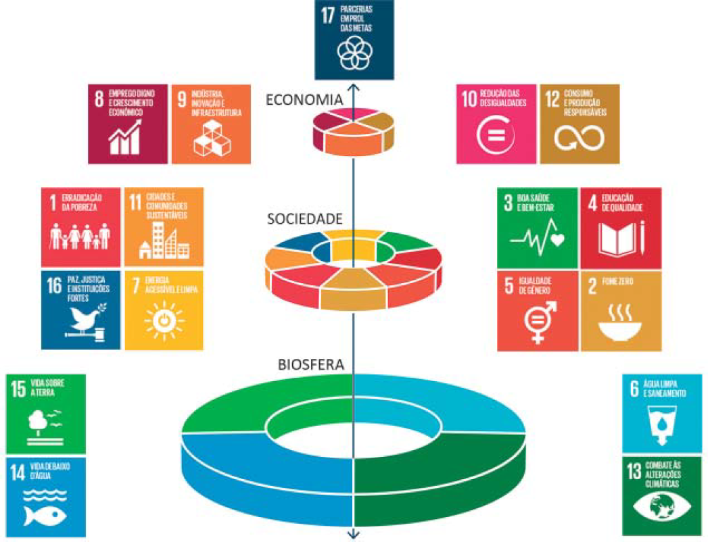

Os Objetivos de Desenvolvimento Sustentável (ODS) compõem uma agenda mundial adotada durante a Cúpula das Nações Unidas sobre o Desenvolvimento Sustentável, em setembro de 2015. Nessa agenda, representada na figura a seguir, são previstas ações em diversas áreas para O estabelecimento de parcerias, grupos e redes que favoreçam o cumprimento desses objetivos.
Disponível em: http://www.stockholmresilience.org. Acesso em: 26 set. 2017 (adaptado).
Considerando que os ODS devem ser implementados por meio de ações que integrem a economia, a sociedade e a biosfera, avalie as afirmações a seguir.
É correto o que se afirma em